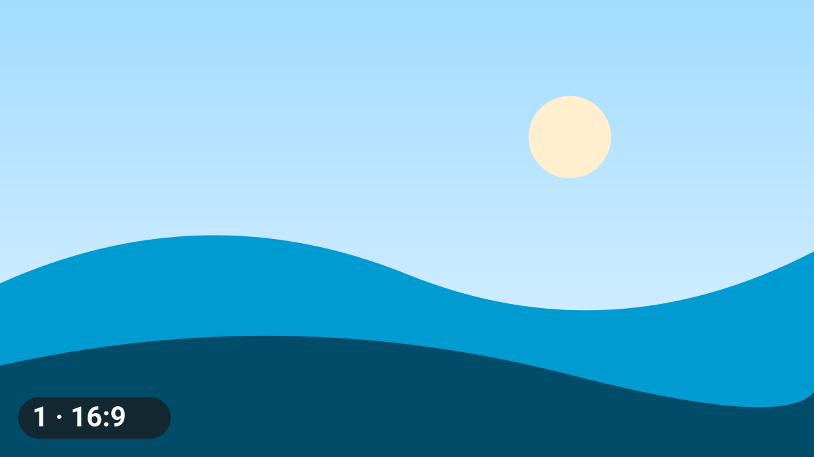

<div class="query-container">
  <div class="grid grid-col-1 cq-md:grid-col-2 gap-4">
    <div class="flex flex-col gap-2">
      <div class="sf-slider">
      <div class="sf-slider-main swiper radius-2"><div class="swiper-wrapper"><div class="swiper-slide"><div class="sf-slider-slide"></div></div><div class="swiper-slide"><div class="sf-slider-slide"></div></div><div class="swiper-slide"><div class="sf-slider-slide"></div></div></div></div>
      <div class="sf-slider-controls"><div class="sf-slider-arrows sf-slider-arrows--plate"><button type="button" class="sf-icon-button sf-icon-button--ghost sf-icon-button--on-surface sf-icon-button--icon sf-icon-button--size-1 sf-slider-button-prev" aria-label="Предыдущий слайд"><i class="sf-icon" aria-hidden="true">keyboard_arrow_left</i></button><button type="button" class="sf-icon-button sf-icon-button--ghost sf-icon-button--on-surface sf-icon-button--icon sf-icon-button--size-1 sf-slider-button-next" aria-label="Следующий слайд"><i class="sf-icon" aria-hidden="true">keyboard_arrow_right</i></button></div><div class="sf-slider-dots sf-slider-dots--plate flex sf-slider-pagination"></div></div>
    </div>
      <span class="text-1/2 color-on-surface-variant">без модификатора: навигация поверх слайдов</span>
    </div>
    <div class="flex flex-col gap-2">
      <div class="sf-slider sf-slider--content">
      <div class="sf-slider-main swiper"><div class="swiper-wrapper"><div class="swiper-slide"><article class="sf-slider-slide radius-2 bg-surface-container p-2"><p class="m-0 weight-6">Подготовьте материалы</p><p class="m-0">Соберите тексты и изображения для публикации.</p><a href="#materials">Подробнее</a></article></div><div class="swiper-slide"><article class="sf-slider-slide radius-2 bg-surface-container p-2"><p class="m-0 weight-6">Проверьте результат</p><p class="m-0">Просмотрите страницу перед открытием доступа.</p><a href="#review">Подробнее</a></article></div><div class="swiper-slide"><article class="sf-slider-slide radius-2 bg-surface-container p-2"><p class="m-0 weight-6">Опубликуйте</p><p class="m-0">Сделайте готовую версию доступной пользователям.</p><a href="#publish">Подробнее</a></article></div></div></div>
      <div class="sf-slider-controls"><div class="sf-slider-dots sf-slider-dots--bare flex sf-slider-pagination"></div><div class="sf-slider-arrows"><button type="button" class="sf-icon-button sf-icon-button--tonal sf-icon-button--on-surface sf-icon-button--icon sf-icon-button--size-1 sf-slider-button-prev" aria-label="Предыдущий слайд"><i class="sf-icon" aria-hidden="true">keyboard_arrow_left</i></button><button type="button" class="sf-icon-button sf-icon-button--tonal sf-icon-button--on-surface sf-icon-button--icon sf-icon-button--size-1 sf-slider-button-next" aria-label="Следующий слайд"><i class="sf-icon" aria-hidden="true">keyboard_arrow_right</i></button></div></div>
    </div>
      <span class="text-1/2 color-on-surface-variant">sf-slider--content: навигация под слайдами</span>
    </div>
  </div>
</div>
